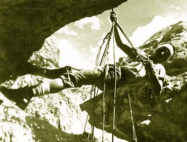
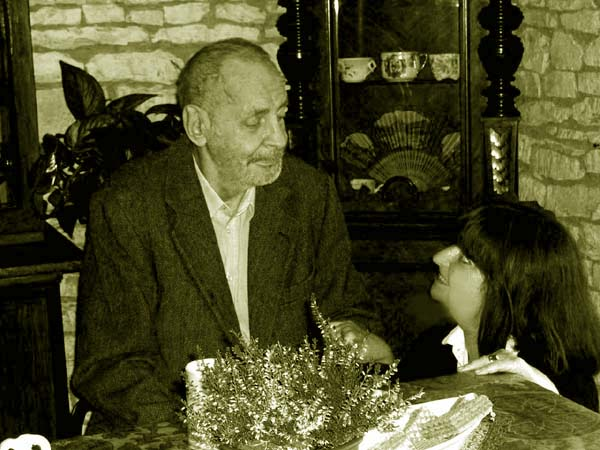
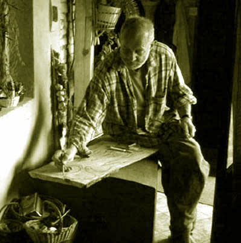
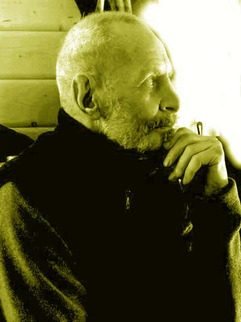
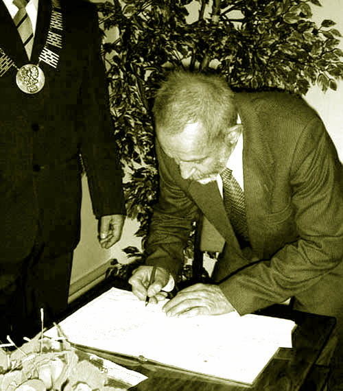
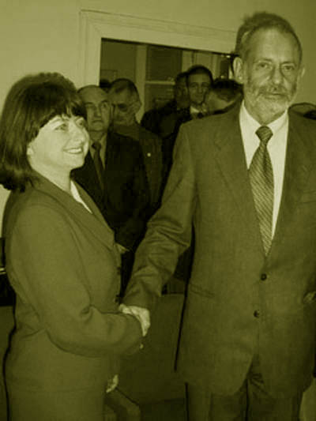
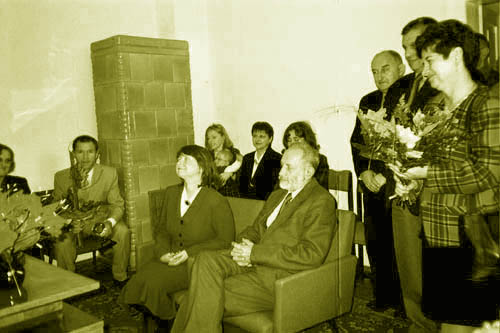
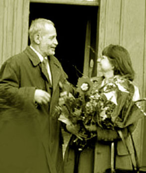

Ale stało się inaczej.
Początek XXI wieku był dla mnie mało udany. Prawe biodro zapadło się na tyle, że chodziłam z kulą, a i tak bolał każdy krok. Do tego moja choroba nasiliła się i trzeba było podnieść dawkę sterydów, co sprawiło, że utyłam i stałam się niemrawa. Mimo tego udzielałam się towarzysko. Mieszkałam wtedy znów w Krakowie. Choć byłam samotna i mało kto chciał mnie wtedy zapraszać na przyjęcia, zdarzały się imprezy, jakie wnosiły radość w moje smętne wtedy życie.
Na jednym z takich spotkań poznałam pewnego mężczyznę. Opowiadałam wtedy wszystkim, jak męczące jest dla mnie poruszanie się po schodach i w ogóle jakakolwiek aktywność, ale robiłam to w wesoły sposób, więc nikt się specjalnie nie przejął moim zmartwieniem. Wróciłam do domu taksówką i smacznie zasnęłam.
Nazajutrz bladym świtem zadzwonił telefon.
- Dzień dobry. Poznaliśmy się wczoraj u Jacka, pamiętasz? Słuchaj, czy nie chciałabyś ze mną zamieszkać. Ja bym się tobą opiekował, pomagałbym ci.
- Dzień dobry - odparłam nieco jeszcze zaspana. To miłe, ale ja nie wiem nawet, jak się pan nazywa.
- A jakie ma znaczenie to, jak się nazywam - odparł dzwoniący, nieco poirytowany moją odpowiedzią.
W istocie - pomyślałam - jakie ma znaczenie nazwisko, skoro gość ma poważne zamiary. Poprosiłam grzecznie, by zadzwonił później, bo muszę to przemyśleć. Tak naprawdę chciałam dowiedzieć się od naszych wspólnych znajomych, kto to właściwie jest.
Następne wydarzenia potoczyły się z prędkością śniegowej kuli na alpejskim zboczu. Celowo użyłam tej przenośni, albowiem owym odważnym i stanowczym mężczyzną był alpinista i taternik, Lucjan Saduś.
Nie minął tydzień, jak zamieszkaliśmy razem i spędzili następne 14 lat nie rozstając się na dłużej niż kilka dni. On miał wtedy 61 lat, ja 45.
Nasz związek był dość dynamiczny i nie da się w żadnym razie powiedzieć, że trawiła nas nuda. Lucjan był nadzwyczajną osobowością, pełną jednak psychologicznych krzywizn, skłonności do nadużywania i głęboko skrywanej emocjonalności. Mimo tego życie u jego boku uważam za niezwykle udane i cenne. Byłam dumna z jego osiągnięć wspinaczkowych, imponował mi poczuciem humoru (nieco zgryźliwym), pracowitością, lojalnością, wiernością i bezgranicznym oddaniem. Najwspanialsze lata spędziliśmy w Moczydle, gdzie razem dźwigaliśmy z ruin nasz kamienny domek.
Nasz ślub odbył się w Urzędzie Stanu Cywilnego w Książu Wielkim, 23 października 2003 roku.
W ostatnich latach życia Lucjan chorował, co w jego przypadku było dość upokarzające, bo był człowiekiem nadzwyczaj silnym fizycznie, wytrzymałym, niezależnym i dumnym. Konieczność zdawania się na mnie we wszystkich życiowych czynnościach mocno mu doskwierała. Opiekowałam się nim najczulej jak potrafiłam. Aż do końca był w domu, w Moczydle.
Zmarł, trzymając mnie za rękę. Miał 75 lat. Był 2014 rok, kwiecień. Pochowano go w Wielki Piątek na wiejskim cmentarzu w Mieronicach. Leżą tam wszyscy moi najbliżsi.




